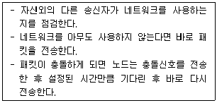
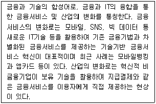

네트워크관리사-2급 (2018-04-22 기출문제)
1과목: TCP/IP
1. 라우터에서 패킷의 목적지를 결정하는 방법으로 올바른 것은?
- 해당 Default Gateway와 AND 연산이 이루어진다.
- 해당 서브넷 마스크와 OR 연산이 이루어진다.
- 해당 Default Gateway와 OR 연산이 이루어진다.
- 해당 서브넷 마스크와 AND 연산이 이루어진다.
(정답률: 76%)

2. TCP/IP Protocol 군에서 네트워크 계층의 프로토콜로만 연결된 것은?
- TCP - UDP - IP
- ICMP - IP - IGMP
- FTP - SMTP - Telnet
- ARP - RARP - TCP
(정답률: 88%)
3. SNMP 클라이언트 프로그램을 실행하는 주체와 SNMP 서버 프로그램을 실행하는 주체는 각각 무엇인가?
- 매니저, 매니저
- 매니저, 에이전트
- 에이전트, 매니저
- 에이전트, 에이전트
(정답률: 79%)
4. 인터넷 그룹 관리 프로토콜로 컴퓨터가 멀티캐스트 그룹을 인근의 라우터들에게 알리는 수단을 제공하는 인터넷 프로토콜은?
- ICMP
- IGMP
- EGP
- IGP
(정답률: 90%)
5. TCP와 UDP의 차이점을 설명한 것 중 옳지 않은 것은?
- TCP는 전달된 패킷에 대한 수신측의 인증이 필요하지만 UDP는 필요하지 않다.
- TCP는 대용량의 데이터나 중요한 데이터 전송에 이용이 되지만 UDP는 단순한 메시지 전달에 주로 사용된다.
- UDP는 네트워크가 혼잡하거나 라우팅이 복잡할 경우에는 패킷이 유실될 우려가 있다.
- UDP는 데이터 전송전에 반드시 송수신 간의 세션이 먼저 수립되어야 한다.
(정답률: 84%)
6. C Class의 네트워크를 서브넷으로 나누어 각 서브넷에 4~5 대의 PC를 접속해야 할 때, 서브넷 마스크 값으로 올바른 것은?
- 255.255.255.240
- 255.255.0.192
- 255.255.255.248
- 255.255.255.0
(정답률: 83%)
7. Anonymous FTP에 대한 설명으로 옳지 않은 것은?
- 상대 컴퓨터의 계정 없이도 파일을 업로드하거나 다운로드 할 수 있다.
- 비밀번호는 어떠한 것을 입력해도 상관없지만, 통상적으로 자신의 전자 메일 주소를 입력한다.
- Anonymous라는 계정을 이용하여 접속한다.
- Anonymous FTP를 사용하면, 텍스트 문서만을 송수신할 수 있다.
(정답률: 72%)
8. Internet에서 망 관리와 관련된 에러보고, 도착 가능 검사, 혼잡제어 등의 기능을 수행하는 프로토콜은?
- ARP
- BOOTP
- IGMP
- ICMP
(정답률: 84%)
9. IP 패킷은 네트워크 유형에 따라 전송량에 있어 차이가 나기 때문에 적당한 크기로 분할하게 된다. 이때 기준이 되는 것은?
- TOS(Tape Operation System)
- MTU(Maximum Transmission Unit)
- TTL(Time-To-Live)
- Port Number
(정답률: 88%)
10. UDP 헤더 구조에 대한 설명으로 옳지 않은 것은?
- Source Port - 송신측 응용 프로세스 포트 번호 필드
- Destination Port - 선택적 필드로 사용하지 않을 때는 Zero로 채워지는 필드
- Checksum - 오류 검사를 위한 필드
- Length - UDP 헤더와 데이터 부분을 포함한 데이터 그램의 길이를 나타내는 필드
(정답률: 74%)
11. 네트워크 프로토콜에 대한 설명으로 옳지 않은 것은?
- NetBEUI - 수 십대 규모의 로컬 네트워크에서 사용하기에 적합한 프로토콜이다.
- TCP/IP - 프로토콜 확장이 용이하게 설계되었지만, 속도 문제 때문에 근거리 통신망에서만 사용한다.
- IPX/SPX - 제록스의 IDP와 SPP를 개선하여 사용되었던 Novel Netware 프로토콜이다.
- OSPF - 라우팅 프로토콜의 하나로 가장 짧은 경로를 채택한다.
(정답률: 75%)
12. RIP(Routing Information Protocol)의 특징에 대한 설명으로 올바른 것은?
- 서브넷 주소를 인식하여 정보를 처리할 수 있다.
- 링크 상태 알고리즘을 사용하므로, 링크 상태에 대한 변화가 빠르다.
- 메트릭으로 유일하게 Hop Count만을 고려한다.
- 대규모 네트워크에서 주로 사용되며, 기본 라우팅 업데이트 주기는 1초이다.
(정답률: 87%)
13. 다음 중 Ping 유틸리티와 관련이 없는 것은?
- ICMP 메시지를 이용한다.
- Echo Request 메시지를 보내고 해당 컴퓨터로부터 ICMP Echo Reply 메시지를 기다린다.
- TCP/IP 구성 파라미터를 확인 할 수 있다.
- TCP/IP 연결성을 테스트 할 수 있다.
(정답률: 80%)
14. ARP 캐시에 대한 설명으로 옳지 않은 것은?
- 각 호스트는 ARP Request를 보내기 전에 ARP 캐시에서 해당 호스트의 하드웨어 주소를 찾는다.
- ARP 캐시는 새로운 하드웨어가 네트워크에 추가된 경우 갱신된다.
- ARP 캐시의 수명이 유한하여 무한정 커지는 것을 방지한다.
- 중복된 IP가 발견된 경우 ARP 캐시는 갱신되지 않는다.
(정답률: 77%)
15. IPv4의 IP Address 할당에 대한 설명으로 옳지 않은 것은?
- 모든 Network ID와 Host ID의 비트가 '1'이 되어서는 안 된다.
- Class B는 최상위 2비트를 '10'으로 설정한다.
- Class A는 최상위 3비트를 '110'으로 설정한다.
- '127.x.x.x' 형태의 IP Address는 Loopback 주소를 나타내는 특수 Address로 할당하여 사용하지 않는다.
(정답률: 86%)
16. 도메인 네임을 IP Address로 바꿔 주는 명령어로, 이름 변환 동작을 요청함으로써 DNS의 문제를 진단하는데 사용되는 것은?
- ipconfig
- netstat
- nslookup
- ping
(정답률: 78%)
17. IPv4와 비교하였을 때, IPv6 주소체계의 특징으로 옳지 않은 것은?
- 64비트 주소체계
- 향상된 서비스품질 지원
- 보안기능의 강화
- 자동 주소설정 기능
(정답률: 91%)
2과목: 네트워크 일반
18. 에러제어 기법 중 자동 재전송 기법으로 옳지 않은 것은?
- Stop and Wait ARQ
- Go-Back N ARQ
- 전진에러 수정(FEC)
- Selective ARQ
(정답률: 86%)
19. OSI 7 Layer에서 최적의 경로를 선택하는 계층으로 올바른 것은?
- 세션 계층(Session Layer)
- 전송 계층(Transport Layer)
- 네트워크 계층(Network Layer)
- 데이터링크 계층(Datalink Layer)
(정답률: 70%)
20. 다음 내용이 나타내는 매체 방식은?

- Token Passing
- Demand Priority
- CSMA/CA
- CSMA/CD
(정답률: 82%)
21. Bus Topology의 설명 중 올바른 것은?
- 문제가 발생한 위치를 파악하기가 쉽다.
- 각 스테이션이 중앙스위치에 연결된다.
- 터미네이터(Terminator)가 시그널의 반사를 방지하기 위해 사용된다.
- Token Passing 기법을 사용한다.
(정답률: 88%)
22. OSI 7 계층 모델 중 트랜스포트 계층에 관한 설명으로 올바른 것은?
- 인접한 호스트들 간의 에러제어 및 흐름제어 기능이 있다.
- 라우팅 및 Addressing 기능을 제공한다.
- 데이터를 전기적인 신호로 변환하여 장치 간 전송을 담당한다.
- 네트워크계층에서 제공하는 QoS(Quality of Service)를 고려하여, 사용자가 요구하는 QoS를 만족시킬 수 있는 가를 판단한다.
(정답률: 74%)
23. 프로토콜 계층 구조상의 기본 구성요소 중 실체(Entity) 간의 통신 속도 및 메시지 순서를 위한 제어정보는?
- 타이밍(Timing)
- 의미(Semantics)
- 구문(Syntax)
- 처리(Process)
(정답률: 82%)
24. 다음 내용이 설명하는 용어는?

- 스마트폰 결제
- RFID
- 전자금융
- FinTech
(정답률: 79%)
25. PCM 전송 방식을 순서대로 올바르게 나타낸 것은?
- 아날로그 신호 → 부호화 → 양자화 → 표본화 → 전송로
- 아날로그 신호 → 양자화 → 표본화 → 부호화 → 전송로
- 아날로그 신호 → 표본화 → 양자화 → 부호화 → 전송로
- 아날로그 신호 → 부호화 → 표본화 → 양자화 → 전송로
(정답률: 87%)
26. TCP/IP Protocol Suit에서 전송 계층의 프로토콜은?
- TFTP
- UDP
- RARP
- PPP
(정답률: 84%)
27. 100Mbps 이상의 전송속도를 제공하는 무선 LAN의 표준은?
- IEEE 802.11a
- IEEE 802.11b
- IEEE 802.11g
- IEEE 802.11n
(정답률: 69%)
3과목: NOS
28. Windows Server 2008 R2에서 자신의 네트워크 안에 있는 클라이언트 컴퓨터가 부팅될 때 자동으로 IP 주소를 할당해주는 서버는?
- DHCP 서버
- WINS 서버
- DNS 서버
- 터미널 서버
(정답률: 85%)
29. Windows Server 2008 R2에서 계정의 종류 중 로컬 사용자 계정(Local User Account)에 대한 설명으로 올바른 것은?
- 운영체제 설치시 관리자가 등록하지 않아도 미리 등록되는 계정으로 삭제나 편집이 불가능하다.
- Administrator, Guest, IUSER_XXX, IWAM_XXX 등이 있다.
- 서버에 로그인 할 수 있는 계정으로 일반적인 계정은 모두 로컬 로그인 계정에 해당한다.
- 로그인할 때 도메인 컨트롤러를 통해 도메인 사용자 계정을 인증 받아 로그인한다.
(정답률: 65%)
30. Linux 시스템에서 특정 서비스를 제공하는 Daemon이 살아있는지 확인할 때 사용하는 명령어는?
- daemon
- fsck
- men
- ps
(정답률: 74%)
31. Windows Server 2008 R2에서 성능 모니터 도구에 대한 설명으로 옳지 않은 것은?
- 성능 모니터에서는 성능 매개변수에 해당하는 선택된 카운터에 대해 통계정보를 보여준다.
- 리소스 모니터는 시스템의 4개 핵심 리소스를 대상으로 계속 카운터를 캡처해 보여준다.
- 안정성 모니터는 1부터 10까지의 안정성 인덱스를 이용해 시스템 안정성을 보여준다.
- 데이터 수집 집합기는 시스템의 성능에 영향을 미치는 일반 사용자들의 데이터를 보여준다.
(정답률: 63%)
32. Windows Server 2008 R2에서 보안 템플릿을 시스템에 적용하기 전에 만일을 위해 롤백 템플릿을 생성하고자 한다. 그런데 롤백 템플릿을 통해서도 이전 상태로 되돌아갈 수 없는 항목은?
- 파일시스템과 레지스트리
- 계정 정책
- 시스템 서비스
- 제한된 그룹
(정답률: 67%)
33. 아파치 웹서버의 서버 측 에러 메시지 내용으로 맞는 것은?
- 502 (Service Unvailable) : 클라이언트 요청 내용에는 이상이 없지만, 서버측에서 클라이언트의 요청을 서비스할 준비가 되지 않은 경우
- 501 (Not Implemented) : 클라이언트의 서비스 요청 내용 중에서 일부 명령을 수행할 수 없을 경우
- 503 (Bad Request) : 게이트웨이의 경로를 잘못 지정해서 발생된 경우
- 500 (Internal Server Error) : 서버에 보낸 요청 메시지 형식을 서버가 해석하지 못한 경우
(정답률: 73%)
34. Windows Server 2008 R2의 VPN(Virtual Private Networks)에 관한 설명으로 옳지 않은 것은?
- VPN을 사용하기 위해서는 최소 두 개의 IP가 필요하다.
- 서버관리자의 GUI 환경에서는 [서버 역할 - 네트워크 정책 및 액세스 - 라우팅 및 원격 액세스 서비스 - 원격 액세스 탭] 순으로 접근하여 설치한다.
- 클라이언트는 VPN에 한번 접속하면 VPN 연결을 통하지 않고도 내부 네트워크에 접근이 가능하다.
- Gateway-to-Gateway VPN은 두 개의 VPN 서버가 공용 네트워크상에서 연결된다.
(정답률: 81%)
35. DHCP로부터 새로운 IP Address를 부여받기 위해 사용되는 명령어 옵션은?
- ipconfig /renew
- ipconfig /release
- ipconfig /flushdns
- ipconfig /setclassid
(정답률: 83%)
36. 액티브 디렉터리의 여러 구성 단위들이 작은 것부터 크기가 커지는 순으로 나열된 것은?
- 도메인 < 조직구성단위 < 트리 < 포리스트
- 트리 < 포리스트 < 도메인 < 조직구성단위
- 조직구성단위 < 도메인 < 트리 <포리스트
- 조직구성단위 < 트리 < 포리스트 < 도메인
(정답률: 74%)
37. Linux에서 사용되는 'free' 명령어에 대한 설명 중 올바른 것은?
- 사용 중인 메모리, 사용 가능한 메모리 용량을 알 수 있다.
- 패스워드 없이 사용하는 유저를 알 수 있다.
- 디렉터리의 사용량을 알 수 있다.
- 사용 가능한 파일 시스템의 양을 알 수 있다.
(정답률: 83%)
38. Windows Server 2008 R2에서 성능 모니터에 대한 설명으로 옳지 않은 것은?
- 시스템 안정성은 안정성 모니터를 이용하여 확인한다. 안정성 모니터는 1부터 10까지 시스템 안정성을 평가하는 안정성 인덱스를 이용하며, '1'이 안정성이 완벽함을 의미한다.
- 성능 모니터는 개체와 카운터를 사용한다. 성능 모니터 개체는 측정할 리소스를 지정한다. 카운터는 개체의 개별적인 메트릭이다.
- 리소스 모니터는 시스템의 4개 핵심 리소스(프로세스, 메모리, 디스크 , 네트워크 인터페이스)를 대상으로 끊임없이 실행되고 카운터를 캡쳐한다.
- 2개의 사전 구축된 데이터 수집기 집합은 시스템 진단과 시스템 성능이다. 서버를 도메인 컨트롤러로 사용한다면, AD 진단도 추가된다.
(정답률: 71%)
39. Windows Server 2008 R2 운영 시 보안을 위한 조치로 적절하지 않은 것은?
- 가급적 서버의 서비스들을 많이 활성화시켜 둔다.
- 비즈니스 자원과 서비스를 분리한다.
- 사용자에게는 임무를 수행할 만큼의 최소 권한만 부여한다.
- 변경사항을 적용하기 전에 정책을 가지고 검사한다.
(정답률: 86%)
40. Windows Server 2008 R2에서 기본 디스크를 동적 디스크로 변환해야만 할 수 있는 작업은?
- 드라이브 공유 구성
- 주 파티션과 확장 파티션의 생성과 삭제
- RAID 볼륨의 생성과 삭제
- 드라이브 문자 및 경로 변경
(정답률: 66%)
41. Windows Server 2008 R2 환경에서 파일 공유에 관한 설명으로 옳지 않은 것은?
- NTFS 권한과 공유 권한이 동시에 설정될 경우 NTFS 권한 설정 내용이 공유 권한 설정보다 우선한다.
- 공유 설정 시 디폴트로 주어지는 사용권한은 보안상 안전하다.
- 드라이브의 등록정보 창에서 공유정보를 확인할 수 있으며 명령창에서는 netuse로 확인한다.
- hidden 공유의 경우에는 공유이름 끝에 '#' 이 붙는다.
(정답률: 71%)
42. Windows Server 2008 R2의 파일 암호화에 관한 설명으로 옳지 않은 것은?
- NTFS 파일 시스템만 암호화가 가능하다.
- 암호화된 파일은 한 사람만 사용이 가능하다.
- 일반 백업 절차에 의해 암호화된 파일을 백업하면 복구 시에 복호화 된다.
- 폴더를 암호화 했을 때, 폴더 내 생성된 모든 파일은 그 시점에 암호화 된다.
(정답률: 73%)
43. Windows Server 2008 R2는 그룹을 이용한 작업관리가 이루어진다. 다음 중 그룹에 대한 설명으로 올바르지 않은 것은?
- 도메인로컬그룹은 모든 구성원 컴퓨터에서 각각 만들어 진다.
- 도메인로컬그룹은 그 구성원 컴퓨터의 자원에 대해 권한을 부여할 때 사용된다.
- 글로벌그룹은 도메인 컨트롤러에만 만들어 진다.
- 글로벌그룹은 권한이 부여되어 로컬그룹에 소속되어 권한을 상속받을 필요가 없다.
(정답률: 73%)
44. Linux 시스템에서 필수적인 실행 파일과 기본 명령어가 포함되어 있는 디렉터리는?
- /boot
- /etc
- /bin
- /lib
(정답률: 82%)
45. Hyper-V에 대한 설명으로 옳지 않은 것은?
- MS Virtual PC와는 달리 하이퍼바이져 가상화기술에 기초한다.
- Hyper-V를 지원하는 서버 에디션이 반드시 부모 파티션에 설치되어야 한다.
- Hyper-V에서 가상 디스크는 vhd라는 확장자의 파일로 처리된다.
- Hyper-V 관리자 콘솔의 스냅숏은 가상머신을 복제하거나 이동시키는 기능이다.
(정답률: 71%)
4과목: 네트워크 운용기기
46. 한 대의 스위치에서 네트워크를 나누어 마치 여러 대의 스위치처럼 사용할 수 있게 하고, 하나의 포트에 여러 개의 네트워크 정보를 전송할 수 있게 해주는 기능은?
- 스패닝 트리 프로토콜
- 가상 랜(Virtual LAN)
- TFTP 프로토콜
- 가상 사설망(VPN)
(정답률: 81%)
47. 네트워크 연결 장치의 설명으로 올바른 것은?
- Repeater - 스타 토폴로지를 가진 네트워크에서 노드들을 연결하기 위해 사용한다.
- Bridge - 단순히 신호의 세기를 증폭시킴으로써 케이블 최대 길이의 한계를 넘어서 네트워크 길이를 연장시킨다.
- Dummy Hub - 각 패킷의 MAC Address를 모니터링 하여 모든 세그먼트로 보내질 필요가 없는 패킷을 필터링한다.
- Router - 두 개 이상의 네트워크 세그먼트를 연결하고 패킷을 적절한 목적지까지 보낸다.
(정답률: 79%)
48. 아래 전송 선로 중 대역폭이 가장 넓은 전송매체는?
- Twist Pair 케이블
- Base Band 동축케이블
- CATV 동축케이블
- Fiber Optic 케이블
(정답률: 89%)
49. RAID의 레벨 중에서 회전 패리티 방식으로 병목현상을 줄이는 것은?
- RAID-2
- RAID-3
- RAID-4
- RAID-5
(정답률: 72%)
50. 스위칭 허브(Switch Hub)에 대한 설명으로 옳지 않은 것은?
- 리피터 회로가 내장되어 메모리는 각 포트 단위로 연결된 노드 주소를 기억
- 프로세서는 전송패킷의 목적지 주소를 읽고, 패킷이 정해진 목적 포트로만 전송
- 노드간 충돌이나 연결된 노드의 고장으로 과도한 트래픽이 발생하면 전체 노드에 영향을 미침
- 포트당 속도가 일정하며, 패킷 충돌이 없어 효율을 높일 수 있음
(정답률: 71%)